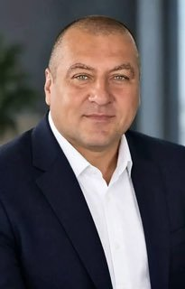
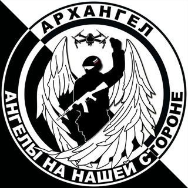
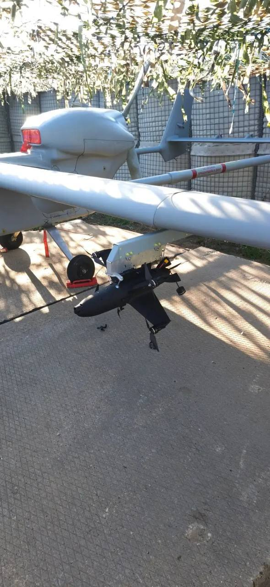
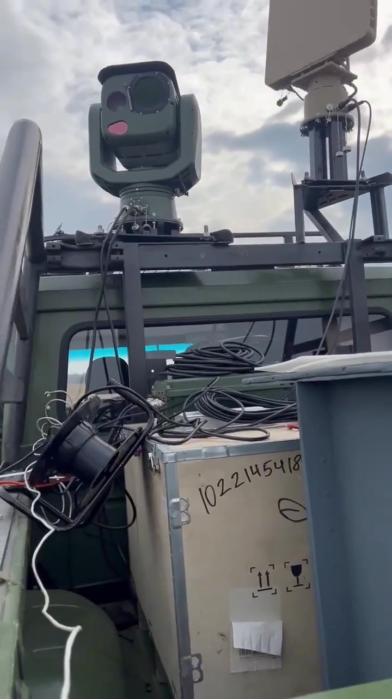

Who runs it, and its link to TsBST
The channel names Mikhail FilippovRussianФилиппов Михаил Геннадьевич as the project's head.1 No company register entry for the project itself is on file: it works through its Telegram channels. Filippov holds 80% of OOO «ARKHANGEL GRUPP»RussianОБЩЕСТВО С ОГРАНИЧЕННОЙ ОТВЕТСТВЕННОСТЬЮ "АРХАНГЕЛ ГРУПП", registered 12.03.2026.2


Reported TsBST's own channel names the project's school in Tuapse as a site running a TsBST resident's drone-interception training mode. That makes the school a user of a resident's product; it does not make the project a resident.5
Where it meets TsBST's circle and the 205th brigade
The project's channel recruits operators for the 205th Guards Separate Motor Rifle Brigade, which Russian-language channels place in the 49th Army of the «Dnepr» Group of Forces6. Its own words:
Their own words Reported“Sign a contract with the Ministry of Defence and go on to serve in the drone unit of the 205th Guards Separate Motor Rifle Brigade. […] The final exam is your first combat mission, in which, under the eye of strict instructors, you will hit your first target.”RussianЗаключай контракт с Министерством обороны и неси дальнейшую службу в подразделении БПЛА 205-ой Гв ОМСБр. […] Выпускной экзамен - это Твое первое боевое задание, на котором Ты под присмотром строгих инструкторов поразишь свою первую цель.The project's channel, 01.12.20257
Their own words Reported“The 205th brigade is the terror of Kherson region. The guys work both on interception and on strike drones, and often send their regards.”Russian205-ая бригада - гроза Херсонской области. Парни работают и на перехвате и на ударниках, частенько передают приветы.The project's channel, 17.08.20268
The school says it trains within Bars-Sarmat, Dmitry Rogozin's drone centre.9
DW's film on the drone attacks in Beryslav shows the school too: over footage of men soldering a drone, watermarked with the school's channel address, the narration says “This Russian volunteer group proudly posts on Telegram” how it makes drones and trains operators10. The film does not say the school supplied the 205th, and the footage of the attacks it shows is credited to another channel. It does not show the school's tie to TsBST.
The school's forum channel calls Kvadrosim, the simulator maker TsBST names as a resident, “our partners”, and says the heads of its Moscow branch, among them Anastasiya ShatrakovaRussianШатракова Анастасия Артёмовна, presented an interceptor called «Arkhangel» to a security agency together with that company11. TsBST's own post names an Anastasia Shatrakova as general director of the interceptor maker «Arkhangel», a finalist of its accelerator12, and the company register lists a person of that name as director of OOO «Arkhangel» since it was registered13. The name and the product match, so the records are read as one person. No document links that company to the school.
Reported The school's, TsBST's and the register's own text, joined by a name. The school's tie to TsBST is still not documented.
Its own pictures
Stills from the project's own posts and videos: the build bench, the airframe in CAD, the flight controller, an observation device it released, and a recruitment video.




What the interceptor is made of
The project published a parts list for its interceptor and a 32-minute build video. The parts are off-the-shelf hobby components. The drawing marks where each sits; the table says who makes it.
| Part | Component | Maker | How we know |
|---|---|---|---|
| body | Bambu Lab X1 Carbon 3D printer + PLA-CF filament | Bambu Lab (China) | named in the parts list20 |
| body | SolidWorks (CAD, incl. CAM/MBD modules) used to model the airframe body | Dassault Systèmes (France) | seen in the video15 |
| 1 | Brotherhobby Avenger 2816 1050KV motors (×4), HQProp 7×12×2 propellers (×4) | Brotherhobby / HQProp (China) | named in the parts list20 |
| 2 | GEPRC MATEN 1.2G 5W VTX + matching 1.2/1.3GHz antenna | GEPRC (China) | named in the parts list20 |
| 3 | Caddx Ratel PRO FPV camera (1500TVL) | Caddx (China) | named in the parts list20 |
| 4 | SpeedyBee F4 F405 V4 60A BLS 30x30 Stack flight controller | SpeedyBee (China) | named in the parts list20 |
| 4 | F722 BLS 65A FC&ESC BEASTFPV flight-controller/ESC stack (replacing the SpeedyBee stack) | BeastFPV (brand; country of origin not established in this registry) | named in the parts list21 |
| 4 | Betaflight Configurator (flight-controller setup software), shown on a laptop with the FC on USB | Betaflight open-source project (international) | seen in the video15 |
| 5 | GNB (Gaoneng) 6000mAh LiHV battery | Shenzhen Gaoneng New Energy (China) | named in the parts list20 |
| 6 | Warhead cylinder (combat version) | the project | its own build post, quoted below |
What it says it makes
Photo in the project's post on the third generation, which says it works with carrier aircraft; the post does not label it18 «Arkhangel» rocket-drone interceptorRussianДрон-ракета-перехватчик «Архангел»
Self-described as “in essence a guided rocket with vertical takeoff, or carriage on a mothership aircraft”. Range up to 50km, max speed 340km/h, cruise 100-120km/h (33% power); 200+km/h needs 50% power at reduced 25-30km range.1
Frame from the project's video of the complex at EXPO.UAV, 26.03.2026: the radar panel and the camera turret on the vehicle roof19 «Slonenok» (Baby Elephant) surveillance-and-strike complexRussian«Слоненок»
Unified airspace surveillance-and-strike complex combining radar/video detection with interceptor-drone engagement. 15km monitoring radius, AI-based automatic target engagement, capacity for 17 interceptor drones per unit; operator role reduced to a single switch-toggle at the engagement moment.22
The project's own picture16 «Nochnik PVN» observation deviceRussian«Ночник ПВН» — прибор наблюдения (ПВН = пост воздушного наблюдения) с экраном 7" и 5"
Hand-held/turret-mounted observation device the channel published as open design files. From the demonstrator's narration (machine transcript, approximate) it is a low-cost 'thermal-style' imager for air-observation posts in two versions, 7-inch and 5-inch screen, an ordinary FPV camera, a green laser pointer on a button on the grip that marks a found target (not visible in the imager), a removable 6S1P pack on XT60, a voltmeter/charge indicator, one (7-inch) or two (5-inch) buck modules, and a dovetail quick-release so it can sit on a turret or take a hand grip.16
In its own words
Translations of the project's posts, grouped by what they show. The Russian original of each is under RU.
It trains drone operators for the army
Translation“The main goal of our centre is training specialists for the Ministry of Defence. That is a fact.”RussianГлавной целью нашего центра является подготовка специалистов для Министерства обороны. Это факт.The project's own channel, 28.07.202623
Translation“the 205th Brigade, whose video reports with hit targets are often published on our channel, is waiting for both operators and technicians.”Russian205-ая бригада, видеоотчеты с пораженными целями которой частенько публикуются у нас на канале ждет и операторов и техников.The project's own channel, 19.07.202624
Translation“One of our strongest, fraternal relationships has formed with the 78th regiment of the 51st Army. Probably two thirds of our graduates serve here.”RussianОдни из самых крепких, братских отношений у нас сложились с 78-м полкой 51-ой армии. Здесь служит наверное две трети наших выпускников.The project's own channel, 13.09.202625
Translation“Soon he will go to serve in a Separate Unmanned Systems Battalion of the 51st Army. [...] you will get a payment of 3.4 million rubles, you will serve with our friends.”RussianВ скором времени он отправится служить в Отдельный Батальон беспилотных систем 51-ой армии. ... получишь выплату в 3.4 миллиона рублей, служить будешь у наших друзей.The project's own channel, 02.03.202626
Translation“A FPV-drone operator of the 1st Slavic Brigade of the 51st Army with the callsign "Radistka" permanently receives military-technical support from the «Arkhangel» organisation «Legion» [...] We are sending, at her request, TEN cargo-drop systems for FPV.”RussianОператор FPV-дронов 1-й Славянской бригады 51-й армии с позывным "Радистка" на постоянной основе получает военно-техническую поддержку от организации Архангел «Легион» для дальнейшего распределения по её усмотрению. Мы отправляем по её запросу ДЕСЯТЬ систем сброса груза на FPV.The project's own channel, 19.06.202527
Translation“Arkhangel" offers remote training so you can become an in-demand specialist.”Russian«Архангел» предлагает пройти дистанционное обучение и стать востребованным специалистом.The project's own channel, 05.04.202528
Translation“the education received at the department of public safety and within Arkhangel's walls will of course be useful after the SVO ends”Russianобразование, полученное на кафедре общественной безопасности и в стенах «Архангела», конечно, пригодится и после окончания СВОThe project's own channel, 05.04.202528
It builds an interceptor and says how it is armed
Translation“We decided to freely publish the blueprints and assembly diagrams for the "Arkhangel" drone... the new drone... is in essence a guided, vertically-launched missile, or one that can be carried by a mothership aircraft. Range — up to 50km... the drone reaches 340 km/h without losing control or aerodynamics... the warhead weight in this model is 500-700 grams... [designed for] tight integration with air-defense radar... Print "Arkhangels", strike the demonic planes.”RussianМы решили выложить в свободный доступ чертежи и схемы сборки дрона «Архангел»... Новый дрон... это, по сути, управляемая ракета с вертикальным взлётом, или возможностью размещения на самолете-матке. Запас хода птички — 50 километров... дрон разгоняется до 340 км/ч без потери управления и аэродинамики... Вес боевой части в представленной модели 500-700 граммов... тесная связка с РЛС ПВО... Печатайте «Архангелов», разите бесовские самолёты.The project's own channel, 31.05.202529
Translation“The combat version of "Arkhangel" uses a cylinder with a warhead (fragmentation elements — ball bearings or lock nuts). This cylinder must weigh 500g for correct balance and directional stability.”RussianВ боевой версии «Архангела» используется цилиндр с боевой частью (поражающие элементы — шарики или контргайки). Вес этого цилиндра должен быть 500 гр для правильной балансировки и курсовой устойчивости дрона.The project's own channel, 26.06.20261
Translation“Civilian application: can be fitted with a weighted nose and used as a ram.”RussianГражданское применение: можно оснастить утяжелённой головкой и использовать как таран.The project's own channel, 26.06.20261
Translation“economical flight speed around 140 km/h, peak speed 315 km/h, [...] flight range up to 50 km depending on conditions and wind”Russianскорость экономичного полета в районе 140кмч, пиковая скорость 315кмч, дальность на 7000мам аккумуляторе заряженным в 4.45в LiHv время полета 20-23мин если не тратить заряд на долгий взлет а сразу оторвавшись от земли на 1м за 2-3 секунды перейти в горизонт и начать планировать снизив газ, дальность полета до 50км в зависимости от условий и ветраThe project's own channel, 06.09.202621
Translation“Software and settings for the flight controller: BestFPV [sic] with a 65A ESC, since the SpeedyBee 60A stack is no longer produced. Fakes on the market!”RussianПрограмма и настройки под полетник: BestFPV с ESC 65A так как стек SpeedyBee 60А больше не производят. на рынки подделки!The project's own channel, 06.09.202621
Translation“The task of recent days is assembling our second-generation interceptor drones.”RussianЗадача последних дней сборка наших дронов-перехватчиков второго поколения.The project's own channel, 04.08.202630
It recruits, and announced its own private military company
Translation“Design Bureau "Arkhangel" — UAV production, air-defense and kamikaze [pilot] training... Terms: official employment, business travel, contract work, salaries above military pay.”RussianК.Б. «Архангел» — производство БПЛА, обучение ПВО и камикадзе... Условия: Официальное оформление, Командировки, Договорная работа, Зарплаты выше военных.The project's own channel, 16.06.202529
Translation“Arkhangel is launching its own PMC. We will have no contract with the Ministry of Defense or with a volunteer corps... Format — a security enterprise. Fieldwork! Salary from 200,000 to 400,000 rubles.”RussianАрхангел запускает свою собственную ЧВК. У нас не будет контракта ни с Минобороны, ни с доброкором... Формат - охранное предприятие. Работа выездная! Заработная плата от двухсот до четырехсот тысяч рублей.The project's own channel, 25.07.202629
Translation“The "Arkhangel" group of companies provides: development and production of interceptor drones... creation of mobile facility-defense teams; operator training... Further information... is provided by: OOO "Arkhangel Grupp".”RussianГруппа компаний «Архангел» обеспечивает: разработку и производство дронов-перехватчиков... создание мобильных расчётов защиты объектов; подготовку операторов... Дополнительная информация... предоставляется: ООО «Архангел Групп».The project's own channel, 02.09.202629
Translation“Everyone hi. Yesterday we took a beating, an air-defense crew died, deep in the rear no less. Went to the powers-that-be with "Arkhangel" [the drone/project] again, same answer — it'll find the target itself, and if not, then there's no one for it to fly against anyway. So I'm going to build in self-lock [autonomous target acquisition], and even if range drops to 15-20 [km], if it's autonomous, that's the point.”RussianВсем привет. Вчера нас изрядно потрепали, погиб расчёт ПВО, на минуточку глубоко в тылу. Очередной раз ходил к власть имущим с Архангелом , ответ один , а он сам цель найдёт, если не , тогда не нужно у нас некому на них летать. По этому буду пилить самозахват , и если даже дальность упадёт до 15-20, но он будет в автономе это будет дело.The project's own channel, 09.07.202631
Weapons tested around it
Translation“Test of IGLA LEX 100 cartridges with tungsten-alloy shot. The cartridge is not certified for civilian firearms — it is made for the Ministry of Defense.”RussianТест патронов IGLA LEX 100 с дробью ВНЖ (вольфрам). Патрон не сертифицирован для гражданского оружия. Его делают для минобороны.A member of the project's private training chat, 03.11.202532
Who it works with
Translation“We met on working matters with the Federation Council senator from the defence committee for Zaporizhzhia and also the commander of BARS Sarmat, Rogozin Dmitry Olegovich. We are starting work.”RussianВстретились по рабочим моментам с Сенатором Совета Федерации РФ комитета обороны по Запорожью а так же командиром БАРС Сармат - Рогозиным Дмитрием Олеговичем. Начинаем работатьThe project's own channel, 17.10.202433
Translation“We, Project Arkhangel, fully support the strategy and ideology of this undertaking. After the meeting, consultation and the agreement reached, we are fully connecting to cooperation with Bars Sarmat and pooling resources, capabilities and developments.”RussianМы Проект Архангел полностью поддерживаем стратегию и идеологию такого начинания и дела! После встречи и консультации и достигнутого соглашения. Полностью подключаемся к взаимодействию с Барс Сармат и объединяем ресурсы, возможности и наработки.The project's own channel, 17.10.202434
Translation“The Centre for Assistance to Servicemen ZOV-AA, jointly with Project Arkhangel, is organising an event.”RussianЦентр Помощи Военнослужащим "ЗОВ-АА"(За Отважных Войнов Армии Ангелов), совместно с Проект "Архангел", организует мероприятие!The project's own channel, 13.08.202435
Translation“Bars-Sarmat continues selecting girls for the first combat unit at the front named after Hero of the Soviet Union Polina Osipenko, the UAV squadron Night Witches 2.0.”Russian"Барс–Сармат" продолжает отбор девушек в первое на фронте боевое подразделение имени героя Советского Союза Полины Осипенко — эскадрильи БпЛА "Ночные ведьмы. 2.0."The project's own channel, 20.10.202436
Designs it gives away
Translation“This is the PVN night-light. For whoever needed it. Take it, use it.”RussianЭто ночник ПВН. Кому надо было. Берите пользуйтесь.The project's own channel, 19.09.202637
Organisations it names as partners
- ANO «NAUCHNO-ISSLEDOVATELSKIY INSTITUT DOPOLNITELNOGO PROFESSIONALNOGO OBRAZOVANIYA»RussianАВТОНОМНАЯ НЕКОММЕРЧЕСКАЯ ОРГАНИЗАЦИЯ "НАУЧНО-ИССЛЕДОВАТЕЛЬСКИЙ ИНСТИТУТ ДОПОЛНИТЕЛЬНОГО ПРОФЕССИОНАЛЬНОГО ОБРАЗОВАНИЯ": trains with it38
- NPO «KAYSANT»RussianНПО «КАЙСАНТ»: supplies components39
- Tsentr spetsialnogo naznacheniya (dobrovolcheskiy, bespilotnykh sistem) «Bars-Sarmat»RussianЦентр специального назначения (добровольческий, беспилотных систем) «Барс-Сармат»: trains with it34
- ANO TSENTR POMOSHCHI VOENNOSLUZHASHCHIM «ZA OTVAZHNYKH VOINOV - ARMII ANGELOV»RussianАВТОНОМНАЯ НЕКОММЕРЧЕСКАЯ ОРГАНИЗАЦИЯ ЦЕНТР ПОМОЩИ ВОЕННОСЛУЖАЩИМ "ЗА ОТВАЖНЫХ ВОИНОВ - АРМИИ АНГЕЛОВ": trains with it40
What this does not show
- No legal entity for the project itself is on file. Who owns the brand, the school and the equipment is not documented here.
- Every statement about training, units and the drone's performance is the project's own. None is confirmed by the units named.
- The parts list shows what the project says it uses. It does not show who sold the parts to it or how many drones were built.
- One instruction on how to load the drone is left out on purpose. The page is not sufficient to build the device it describes.
- The tie to TsBST is one mention of the project's school as a user of a TsBST resident's product, and the school's forum calling that resident a partner.
Sources
- Telegram, @projectArchangel, post 10381, 26.06.2026. t.me/projectArchangel/10381 ↗
- Company register extract (EGRUL, Federal Tax Service) for INN 9702081286, 04.09.2026.
- Telegram post of 23.10.2026 on the channel «Проект Архангел»: one full-size frame of its video, taken at 5 seconds. t.me/projectArchangel/10922 ↗
- Telegram channel «Проект Архангел»: the channel's public profile picture, saved from its public page. t.me/projectArchangel ↗
- Telegram, @ano_cbst, post 1562, 25.11.2025. t.me/ano_cbst/1562 ↗
- Telegram, @osvedomitell_alex («От Мариуполя до Карпат»), post 27702, 23.07.2025. t.me/osvedomitell_alex/27702 ↗
- Telegram, @projectArchangel, post 9067, 01.12.2025. t.me/projectArchangel/9067 ↗
- Telegram, @projectArchangel, post 10667, 17.08.2026. t.me/projectArchangel/10667 ↗
- Telegram, @projectArchangel, post 7287, 22.04.2025. t.me/projectArchangel/7287 ↗
- DW, documentary «Targeting Civilians: How Russian Drones Terrorize a Ukrainian City», 2024, shown on YouTube (footage credit at 8:46, unit map at 16:53). youtube.com/watch?v=kuTo94TnMPo ↗
- Telegram, @Archangel_Forum, post 175293, 08.03.2026. t.me/Archangel_Forum/175293 ↗
- Telegram, @ANO_CBST, post 1976, 17.03.2026. t.me/ANO_CBST/1976 ↗
- Company register extract (EGRUL, Federal Tax Service) for INN 9714079108, 05.09.2026.
- Picture posted on Telegram, @projectarchangel, message 10619, 04.08.2026. t.me/projectarchangel/10619 ↗
- Picture posted on Telegram, @archangelforum, message 183433, 06.09.2026.
- Picture posted on Telegram, @projectarchangel, message 10796, 19.09.2026. t.me/projectarchangel/10796 ↗
- Picture posted on Telegram, @projectarchangel, message 10782, 13.09.2026. t.me/projectarchangel/10782 ↗
- Telegram post of 09.10.2026 on the channel «Проект Архангел»: the photograph attached to its post on the third-generation interceptor and carrier aircraft. t.me/projectArchangel/10874 ↗
- Telegram post of 26.03.2026 on the channel «Проект Архангел»: one full-size frame of its video, taken at 60 seconds. t.me/projectArchangel/9817 ↗
- File posted on Telegram, 26.06.2026.
- Telegram, @Archangel_Forum, post 183433, 06.09.2026. t.me/Archangel_Forum/183433 ↗
- Press article, 15.04.2026.
- Telegram, @projectArchangel, post 10573, 28.07.2026. t.me/projectArchangel/10573 ↗
- Telegram, @projectArchangel, post 10511, 19.07.2026. t.me/projectArchangel/10511 ↗
- Telegram, @projectArchangel, post 10782, 13.09.2026. t.me/projectArchangel/10782 ↗
- Telegram, @projectArchangel, post 9640, 02.03.2026. t.me/projectArchangel/9640 ↗
- Telegram, @projectArchangel, post 7815, 19.06.2025. t.me/projectArchangel/7815 ↗
- Company register extract (EGRUL, Federal Tax Service) for INN 5505057400, 20.09.2026.
- Telegram, @proekt_arhangel, posts read together. t.me/proekt_arhangel ↗
- Telegram, @projectArchangel, post 10619, 04.08.2026. t.me/projectArchangel/10619 ↗
- Telegram, @Archangel_Forum, posts read together. t.me/Archangel_Forum ↗
- Telegram, @projectArchangel, posts read together. t.me/projectArchangel ↗
- Telegram, @projectArchangel, post 5500, 17.10.2024. t.me/projectArchangel/5500 ↗
- Telegram, @projectArchangel, post 5502, 17.10.2024. t.me/projectArchangel/5502 ↗
- Telegram, @projectArchangel, post 5080, 13.08.2024. t.me/projectArchangel/5080 ↗
- Telegram, @projectArchangel, post 5529, 20.10.2024. t.me/projectArchangel/5529 ↗
- Telegram, @projectArchangel, post 10796, 19.09.2026. t.me/projectArchangel/10796 ↗
- Picture posted on Telegram, @projectArchangel, message 9507, 07.02.2026. t.me/projectArchangel/9507 ↗
- Telegram post.
- Telegram, @projectArchangel, post 5657, 03.11.2024. t.me/projectArchangel/5657 ↗